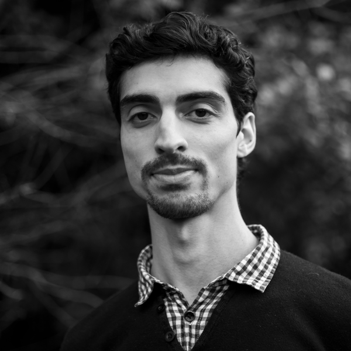
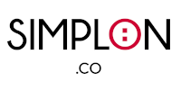

BOURI
BOURI
MEHDI
DÉVELOPPEUR WEB
Après des études en informatique et des expériences dans le développement web, je suis aujourd'hui en formation à l'école Simplon pour acquérir le titre professionnel de Développeur Web (Bac+2).
Dans ce cadre, je suis à la recherche d'une Période d'application en entreprise (PAE) de 3 mois débutant en avril, pour développer mes compétences en PHP et Symfony. Curieux et passionné, je suis capable de prise du recul et d'avancer des propositions pour mener à bien un projet.
COMPÉTENCES
- HTML/CSS - PHP - SQL - Symfony - Javascript - Wordpress
- Réseaux sociaux
- Rédaction
- Montage vidéo
FORMATIONS
-
Titre de Développeur Web (2022)
Simplon.co, Formation en cours à Alès (30)Maquetter une application
Développer le front-end et le back-end d’une application web
Créer une base de données
Développer les composants d’accès aux données
-
Licence Informatique (2011 - 2013)
Université Blaise Pascal, Clermont-Ferrand (63) -
Baccalauréat Scientifique (2011)
Institution Sévigné Saint-Louis, Issoire (63)
EXPÉRIENCES
-
Développement Web (2019)
Création de site vitrine et relation client pour un gîte de groupe. -
Chargé de communication Web (2017)
Service civique dans une association dédiée aux mal-voyants (Information recherche rétinite pigmentaire). Préparation de la Marche Nationale pour la vue annuelle. Refonte du site web, communication papier et numérique. - Professeur particulier de mathématiques (2014)
COMPÉTENCES TRANSVERSES
- Force de proposition
- Communication
- Prise de recul
- Curiosité
CENTRES D'INTÉRÊT
- Course à pied - Randonnée - Vélo
- Sciences - Santé - Nutrition